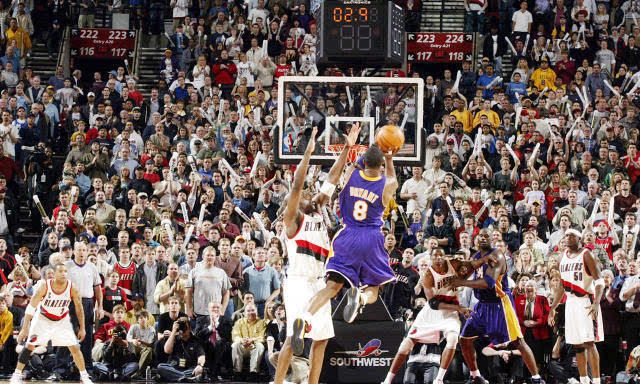

2004年4月15日，科比在常规时间命中绝平三分后又在加时赛命中绝杀三分，完成惊世骇俗的“双绝杀”，湖人以105-104战胜开拓者。

2005年12月20日，湖人对阵达拉斯小牛的比赛，科比在第三节下场时得分为62分，此时小牛全队得分仅61分，科比成为24秒进攻规则引入以来唯一一位做到这一成就的球员。
2006年1月22日，湖人对阵多伦多猛龙的比赛，科比46投28中狂砍81分 ，单场得分仅次于维尔特·张伯伦，位居NBA历史第二。
2006年5月1日，季后赛湖人对阵太阳第四场，科比再次完成“双绝杀”，湖人以99-98获胜，湖人以3-1夺得赛点。
2009年12月5日，湖人主场迎战热火，科比在比赛仅剩0.4秒时迎着德维恩·韦德命中漂移三分绝杀，帮助湖人以108-107战胜热火。
2016年4月14日，科比的退役告别赛，全场50投22中砍下60分4篮板4助攻，并在终场前29秒命中致胜中投，生涯完美谢幕。